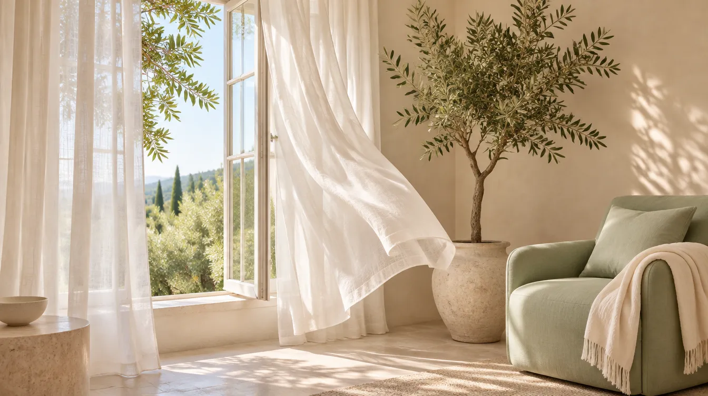
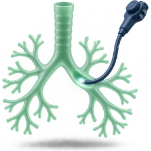
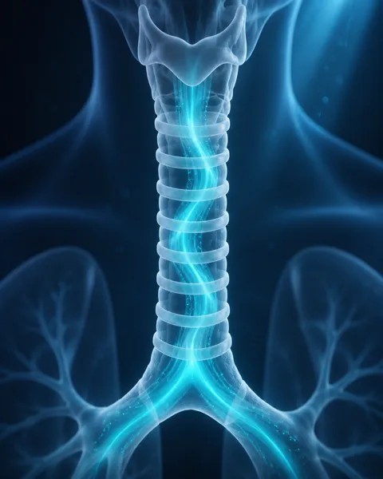
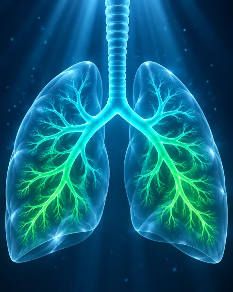
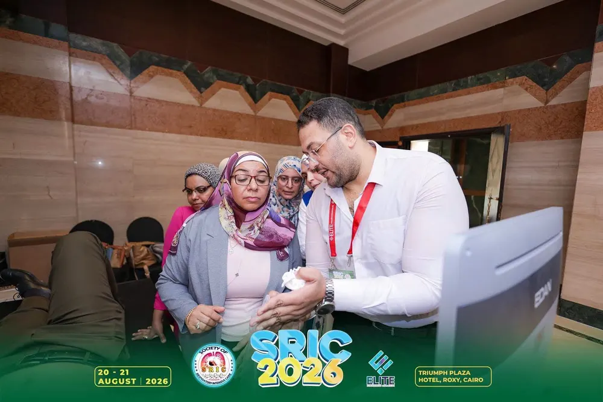
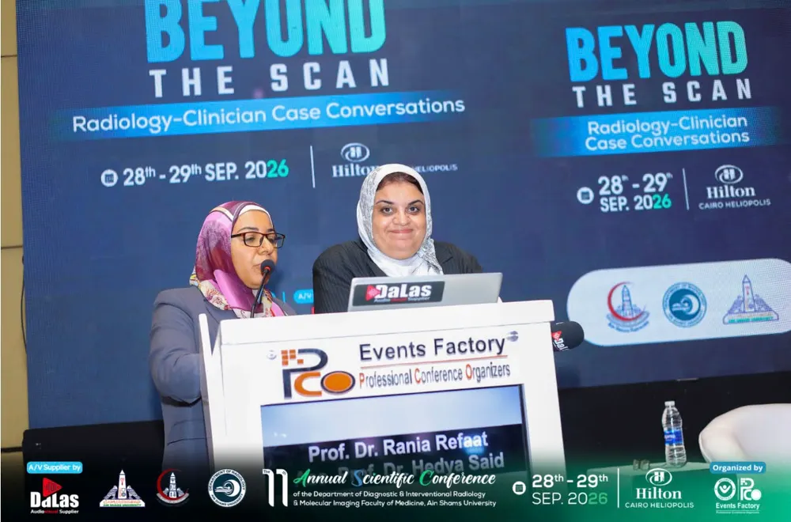
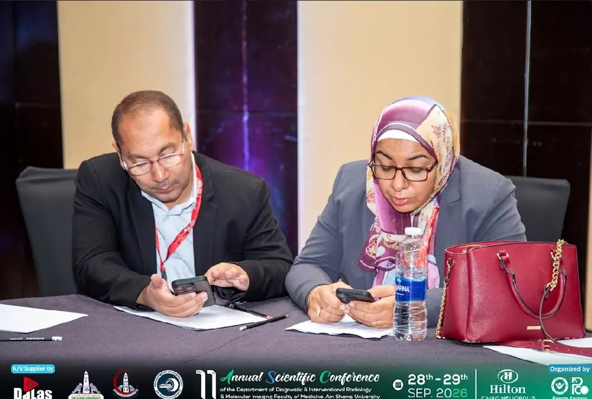

الكشف على الصدر
تحدّث مع طبيبك عن بداية الأعراض وتأثيرها على أنشطتك اليومية. ويمكنك إحضار تقارير الصدر السابقة لمراجعتها معًا.
الأمراض الصدرية · التجمع الخامس
إذا تكررت الكحة، أو شعرت بضيق في التنفّس أثناء مشوارك المعتاد، أو كانت لديك أسئلة عن أشعة الصدر، يمكنك مناقشة ما يشغلك مع أحد أطباء العيادة وفهم الخطوة التالية في رعايتك.

عن العيادة
تضم عيادة تنفّس بسهولة في التجمع الخامس د. هدية سعيد محمد ود. وائل عبد الفتاح، وهما من أعضاء هيئة التدريس بكلية الطب بجامعة عين شمس. يستقبل الطبيبان المرضى في مجمع عيادات THE CLINICS بشارع التسعين الجنوبي.

خدماتنا
تحدّث مع طبيبك عن بداية الأعراض وتأثيرها على أنشطتك اليومية. ويمكنك إحضار تقارير الصدر السابقة لمراجعتها معًا.

ناقش مع طبيبك ما تغيّر منذ الزيارة السابقة، وراجع معه نتائج الفحوصات وأي أسئلة عن خطة المتابعة.

إذا أوصى طبيبك بإجراء منظار للشعب الهوائية، يمكنك مناقشة سبب التوصية وأسئلتك عن الإجراء مع د. هدية.

ابدأ بأكثر ما يشغلك. ربما توقظك الكحة من النوم، أو أصبحت تتوقف في منتصف سلّم كنت تصعده بسهولة. اذكر للطبيب مثالًا من يومك المعتاد، ومتى لاحظت هذا التغيّر لأول مرة.
إذا كان سبب زيارتك نتيجة أشعة أو تقريرًا طبيًا، فحدّد العبارة التي تريد فهمها. وأحضر الصور أو التقارير الأقدم مع تواريخها إن توفرت. يمكنك أن تسأل الطبيب عن علاقة النتائج بما تشعر به وما إذا كانت هناك نقاط تحتاج إلى توضيح.
اطلب من الطبيب شرح الخطوة التالية بكلمات واضحة. وإذا اقترح فحصًا، فاسأله عن الغرض منه، وأين يمكنك إجراؤه، وكيف ستتم مراجعة النتيجة. ودوّن موعد المتابعة إذا اتفقتما عليه.
رحلة نفَس
مرّر لأسفل لتتبّع مسار الهواء داخل صدرك، وما يهتم به طبيب الصدر في كل مرحلة.
0نفَس تقريبًا منذ فتحت هذه الصفحةيتنفس البالغ في وقت الراحة عادةً من ١٢ إلى ٢٠ مرة في الدقيقة.

كل نفَس يمرّ عبر القصبة الهوائية. إذا كانت لديك كحة متكررة أو صفير أو صوت أثناء التنفس، صِف ذلك لطبيبك: متى يحدث، وما الذي يخففه أو يزيده.

تنقسم القصبة الهوائية إلى شعبتين رئيسيتين، ثم إلى ممرات أصغر فأصغر. وعندما يحتاج الطبيب إلى رؤية هذه الممرات من الداخل قد يقترح منظار الشعب الهوائية. إذا تم تحويلك لإجرائه، تشرح لك د. هدية السبب وما يمكن توقعه.
تنتهي أصغر الممرات بملايين الحويصلات الهوائية الدقيقة، وفيها ينتقل الأكسجين إلى الدم. إذا أصبحت تنهج في مشوار كنت تقطعه بسهولة، أو ظهرت ملاحظة في أشعة الصدر، أحضر صورك وتقاريرك معك إلى الكشف.

الزفير يُكمل الدورة، وكذلك زيارتك: يجمع طبيبك بين قصتك والفحص والنتائج، ويشرح لك الخطوة التالية بلغة بسيطة.
خطّط لزيارتك
ابدأ بما حدث منذ الزيارة السابقة. ما الذي أصبح أسهل أو أصعب؟ وما الذي بقي كما هو؟ أحضر نتائج الفحوصات التي طلب الطبيب مراجعتها. وإذا كنت تستخدم بخاخًا، فأحضره أو صوّر اسمه حتى يسهل تحديده عند مناقشة طريقة استخدامك له.

يمكنك حجز استشارة مع د. هدية سعيد محمد لمناقشة الإحالة. أحضر خطاب الإحالة وأي أشعة صدر ورد ذكرها فيه. وإذا كانت التوصية بالمنظار بسبب ملاحظة محددة في التقرير، فاطلب من الطبيبة توضيح موضعها وما الذي يرغب الطبيب المُحيل في التحقق منه.
أطباؤنا

أستاذ مساعد الأمراض الصدرية · استشاري مناظير الشعب الهوائية
أستاذ مساعد الأمراض الصدرية بكلية الطب، جامعة عين شمس. حاصلة على دكتوراه في الأمراض الصدرية، واستشاري أول الأمراض الصدرية واستشاري مناظير الشعب الهوائية.

أستاذ مساعد واستشاري الأمراض الصدرية
أستاذ مساعد واستشاري الأمراض الصدرية بكلية الطب، جامعة عين شمس. يستقبل د. وائل المرضى للكشف على الصدر ومتابعة حالتهم.
جميع المواعيد بتوقيت القاهرة.
خطّط لزيارتك
اختر نوع الزيارة والطبيب والفترة المناسبة، وسنعرض لك ما تحضره معك، ثم اتصل بالعيادة لتأكيد موعدك.
للحجز، يُرجى الاتصال بالعيادة. +20 150 751 8952
يشارك أطباؤنا في مؤتمرات الأمراض الصدرية وورش العمل التطبيقية في مصر، ومنها في عام ٢٠٢٦: قمة القاهرة للصدر، وورشة الموجات فوق الصوتية على الصدر في الطوارئ ضمن مؤتمر SRIC، ومؤتمر Beyond the Scan، والمؤتمر الدولي السابع والستين للجمعية المصرية للأمراض الصدرية.






الحجز والعنوان

اختر الطبيب واليوم المناسبين لك. عند الاتصال، وضّح ما إذا كنت تحجز للكشف لأول مرة أو للمتابعة أو لمناقشة إحالة لإجراء منظار للشعب الهوائية. اسأل عن المواعيد المتاحة في اليوم الذي تفضّله.

إذا أجريت أشعة على الصدر من قبل، فأحضر صور الأشعة والتقارير المكتوبة إن توفرت. ومن المفيد إحضار قائمة بأسماء الأدوية والبخاخات التي تستخدمها حتى يعرف الطبيب ما استخدمته بالفعل. وإذا أحالك طبيب آخر، فأحضر خطاب الإحالة إن كان معك.

اشرح أول تغيّر لاحظته ومتى بدأ. مثلًا، هل أصبحت تحتاج إلى التوقف لالتقاط أنفاسك في مشوار اعتدت إكماله بسهولة؟ وقبل المغادرة، اسأل الطبيب عن الخطوة التالية، والنتائج التي تحتاج إلى إحضارها، وموعد المتابعة المناسب لك.
ضع علامة على ما جهّزته. تُحفظ القائمة على جهازك فقط.
نعم. اذكر ذلك عند الحجز وأحضر المستندات ذات الصلة. وإذا كانت الإحالة لإجراء منظار للشعب الهوائية، يمكنك طلب استشارة مع د. هدية لمناقشة سبب التوصية بالمنظار والخطوة التالية.
اتصل بالعيادة واذكر اسمك واسم الطبيب وتاريخ الحجز، ثم اسأل عن موعد بديل يناسبك.
تستقبل د. هدية ود. وائل المرضى للكشف على الصدر. إذا سبق لك الكشف مع أحدهما وتعود لعرض النتائج، فاذكر اسم الطبيب عند الحجز. ولاستشارة تتعلق بإحالة لإجراء منظار للشعب الهوائية، اطلب الحجز مع د. هدية.
تمتد مواعيد د. وائل يومي الإثنين والثلاثاء من السادسة حتى الثامنة مساءً. وإذا كان السبت أنسب لك، فتستقبل د. هدية المرضى من الرابعة حتى السابعة مساءً. اتصل لمعرفة الأوقات المتاحة للحجز خلال الفترة التي تناسبك.
إذا كنت تتصل نيابةً عن أحد أفراد الأسرة، فجهّز اسم المريض واسم الطبيب المطلوب واليوم المناسب. وإذا كان المريض يحتاج إلى مساعدة في الوصول إلى الدور الثالث، فاستفسر قبل الحضور عن مدخل المبنى والمصعد وأقرب مكان مناسب لنزوله من السيارة.
وضّح عند الاتصال ما إذا كانت الزيارة للكشف لأول مرة أو لعرض نتائج فحوصات أو لمناقشة إحالة. اسأل عن رسوم الزيارة المحددة وطرق الدفع المتاحة. وإذا احتجت إلى إيصال لتقديمه لجهة التأمين، فاذكر ذلك عند الحجز.
جهّز اسم شركة التأمين واسم البرنامج المشترك به. اسأل العيادة عمّا إذا كانت تقبل برنامجك تحديدًا، ثم راجع شركة التأمين لمعرفة ما إذا كنت تحتاج إلى إحالة أو موافقة مسبقة وما المبلغ الذي قد تتحمّله.
استفسر عند الحجز عن الصيغ التي يمكن للطبيب الاطلاع عليها. وإذا أرسل لك مركز الأشعة رابطًا للصور، فتأكد من أنه يفتح قبل الزيارة. احتفظ بالتقرير مع الصور حتى يسهل على الطبيب معرفة الفحص وتاريخه.
التواصل والحجز والعنوان
للكشف أو المتابعة أو الاستفسار عن العنوان، اتصل بأحد رقمي العيادة. يُرجى تأكيد يوم الحجز وساعته قبل التوجّه إلى العيادة.
مجمع عيادات THE CLINICS، عيادة ٣١١، الدور الثالث.
شارع التسعين الجنوبي، التجمع الخامس، القاهرة الجديدة، مصر. يقع المجمع خلف سوبر ماركت محمود الفار. بعد دخول المجمع، توجّه إلى الدور الثالث ثم إلى عيادة ٣١١.
افتح الخريطة